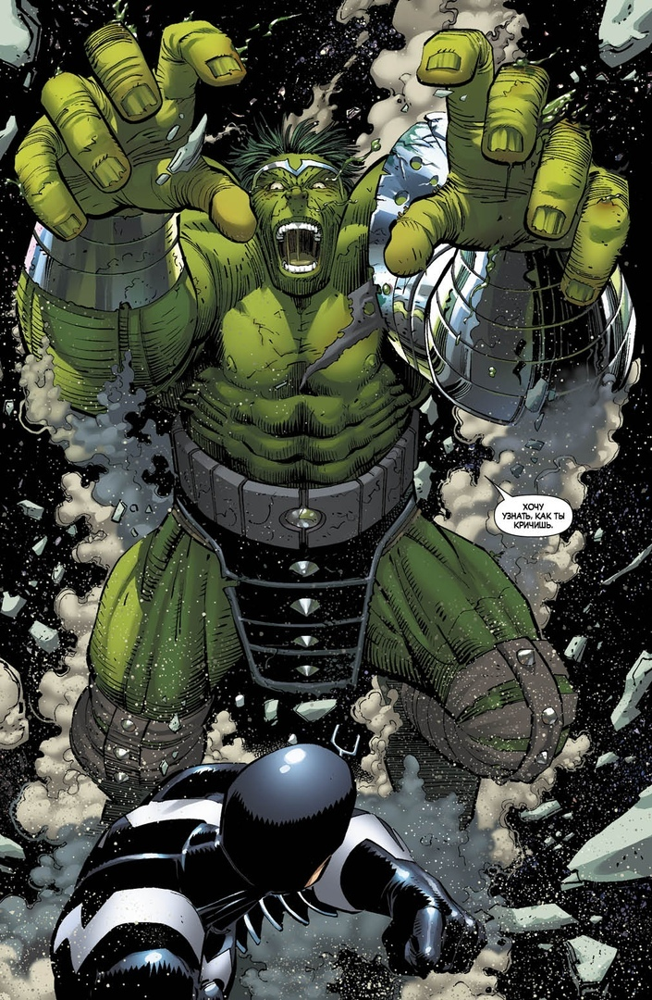

Марк Алан Раффало (англ. Mark Alan Ruffalo; нар. 22 листопада 1967, Кеноша, Вісконсин, США) — американський актор італійського походження.
Дворазовий лауреат премії «Еммі» (2014 та 2020; усього три номінації), номінант на інші престижні премії: «Оскар» (три), «Золотий глобус» (дві), БАФТА (три).
Батько — художник, мати — перукар. Крім Марка в сім'ї було ще троє дітей.
Дитинство пройшло у Вісконсині, а пізніше — в Сан-Дієго.
Закінчивши школу, вчився в Консерваторії Стелли Адлер в Лос-Анджелесі. Дев'ять років пропрацював у театрі.
Популярність прийшла до нього в 2000 р. після ролі у фільмі «Можеш розраховувати на мене». У 2002 році готувався до зйомок у фільмі «Знаки», коли у нього була діагностована доброякісна пухлина головного мозку. Операція була успішною, хоча після неї деякий час у актора було паралізоване обличчя. На сьогодні, незважаючи на те, що після операції він перестав чути лівим вухом, успішно знявся в фільмах: «Співучасник» та «Вічне сяйво чистого розуму».
У 2011 році був номінований на премію «Оскар» за Найкращу чоловічу роль другого плану в картині «Дітки в порядку».
Халк (англ. Hulk), справжнє ім'я доктор Роберт Брюс Беннер (англ. Dr. Robert Bruce Banner) - супергерой коміксів видавництва Marvel Comics.
Халк був створений Стеном Лі та Джеком Кербі, він вперше з'явився в коміксі «Неймовірний Халк» # 1 (травень 1962 року). З тих пір він став одним із найбільш упізнаваних персонажів.
Халк є головним героєм телесеріалу з побічними телефільмами, де Брюса Беннер зіграв Білл Біксбі, а Халка Лу Ферріньо, мультсеріалів 1982, 1996 і 2013 років і двох кінофільмів, в першому 2003 року роль Брюса Беннера виконав Ерік Бана, а в що вийшов у червні 2008 року перезапуску його зіграв Едвард Нортон. З 2012 року в фільмах Кінематографічної всесвіту Marvel роль Халка виконує Марк Руффало.

Вперше Халк з'явився в The Incredible Hulk # 1 (травень 1962), створений автором Стеном Лі, художником-співавтором Джеком Кербі і інкёром Полом Рейнманом. На той час комікс коштував всього 12 центів. У першому випуску Халк не була зеленим, а сірим. Автор і головний редактор Marvel Лі хотів колір, який не припускав би будь-яку етнічну групу. Колорист Стен Голдберг, однак, наполіг, що колірна технологія того часу не могла представляти сірий колір ясно або постійно, через що у випуску були різні відтінки сірого і навіть зелений. З випуску № 2 (липень 1962) і далі Голдберг підфарбував шкіру Халка в зелений. Зелений використовувався в переказування походження, навіть передруку оригінальної історії два наступних десятиліття перефарбовувалися. В The Incredible Hulk vol. 2 # 302 (грудень 1984) сірий Халк був заново представлений в спогадах, що мали місце біля оригінальної історії. Це було повторно підтверджено в vol. 2 # 318 (квітень 1986), що показав, що Халк був сірим під час своєї появи. З тих пір передруку першого випуску демонстрували оригінальний сірий колір (як, наприклад в щорічнику 1999 року, в якому розповідалася більш сучасна історія появи Халка).